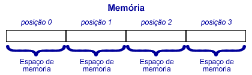
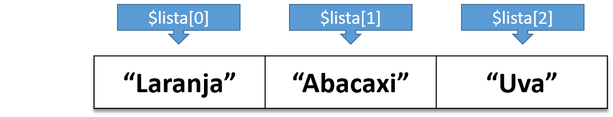
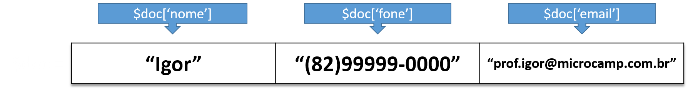

Array é um tipo especial de variável capaz de armazenar mais de um valor ao mesmo tempo.
Como você representaria em seu programa uma lista de 50 produtos?

Em PHP, a função array() é usada para criar um array.
<?php
$lista = array("Laranja", "Abacaxi", "Uva"); // lista iniciada com 3 elementos
?>
<!DOCTYPE html>
<html>
<head>
<title>Arrays em PHP</title>
</head>
<body>
<!-- print_r exibe informação sobre variáveis de maneira mais amigável -->
<pre><?php print_r($lista); ?></pre>
</body>
</html>Mais sobre a função print_r.
Cada valor inserido em um vetor ocupa uma posição que pode ser referenciada por um índice númerico.
Como mostrado no exemplo anterior, por padrão, a contagem dos índices inicia-se pelo valor 0.

<?php
$lista = array("Laranja", "Abacaxi", "Uva"); // lista iniciada com 3 elementos
echo "O elemento no índice 0 do vetor é: $array[0].<br>"; // Escreve "Laranja"
echo "O elemento no índice 1 do vetor é: $array[1].<br>"; // Escreve "Abacaxi"
echo "O elemento no índice 2 do vetor é: $array[2].<br>"; // Escreve "Uva"
echo "O elemento no índice 3 do vetor é: $array[3].<br>"; // Erro: não existe índice 3
?>Em arrays associativos, ao invés de usar números como índices, usa-se chaves nomeadas (strings).
Arrays associativos são formados por pares de chave-valor.

<?php
$doc = array();
$doc['nome'] = "Igor";
$doc['fone'] = "(82)99999-0000";
$doc['email'] = "prof.igor@microcamp.com.br";
echo $doc['email'];
?>Podemos criar um vetor, definir índices de chaves associativas e atribuir valor ao mesmo tempo usando o operador =>.
<?php
$doc = array("nome" => "Igor", "fone" => "(82)99999-0000", "email" => "prof.igor@microcamp.com.br");
echo $doc['fone'];
?>Operadores são usados para realizar operações sobre variáveis e valores.
Nesse módulo iremos dar uma olhada nos seguintes tipos de operadores:
O operador . (concatenação) é utilizado quando queremos juntar uma cadeia de string com uma outra.
<?php
$string1 = "PHP";
$string2 = "rocks";
// string1 junta com "espaço" que junta com string2
echo $string1 . " " . $string2;
?>Operadores aritméticos só podem ser usados quando os operandos são números (integer ou float). Se forem de outro tipo, terão seus valores convertidos antes da realização da operação.
| Operador | Nome | Exemplo | Resultado |
|---|---|---|---|
| + | Adição | $x + $y | Soma de x e y |
| - | Subtração | $x - $y | Diferença de x e y |
| * | Multiplicação | $x * $y | Produto de x e y |
| / | Divisão | $x / $y | Quociente de x e y |
| % | Módulo | $x % $y | Resto de x dividido por y |
| ** | Exponenciação | $x ** $y | Resultado de x elevado à y |
<?php
$valor1 = 10;
$valor2 = 4;
echo "<h2>Operadores aritméticos</h2>";
echo "<p>Adição: " . ($valor1 + $valor2) . "</p>";
echo "<p>Subtração: " . ($valor1 - $valor2) . "</p>";
echo "<p>Multiplicação: " . ($valor1 * $valor2) . "</p>";
echo "<p>Divisão: " . ($valor1 / $valor2) . "</p>";
echo "<p>Módulo: " . ($valor1 % $valor2) . "</p>";
echo "<p>Exponenciação: " . ($valor1 ** $valor2) . "</p>";
?>São usados para incrementar ou decrementar o valor de uma variável.
| Operador | Nome | Resultado |
|---|---|---|
| ++$x | Pré-incremento | Incrementa 1 em x e então retorna resultado |
| $x++ | Pós-incremento | Retorna resultado e então incrementa 1 em x |
| --$x | Pré-decremento | Decrementa 1 de x e então retorna resultado |
| $x-- | Pós-decremento | Retorna resultado e então decrementa 1 de x |
<?php
$x = 10;
echo "<h3>Operadores de incremento</h3>";
echo 'Valor de $x = ' . $x . ';<br><br>';
$y = $x++;
echo '$y = $x++;<br>';
echo 'Resultado: y = ' . $y . '<br>';
echo 'Valor de $x = ' . $x . '<br><br>';
$y = ++$x;
echo '$y = ++$x;<br>';
echo 'Resultado: $y = ' . $y . '<br>';
echo 'Valor de $x = ' . $x . '<br>';
?>Existe um operador básico de atribuição (=) do qual todos os outros são derivados.
Um operador de atribuição atribui um valor ao operando à sua esquerda baseado no valor do operando à direita.
| Atribuição | Equivalente a | Descrição |
|---|---|---|
| $x = $y | $x = $y | Atribuição simples |
| $x += $y | $x = $x + $y | Atribuição com adição |
| $x -= $y | $x = $x - $y | Atribuição com subtração |
| $x *= $y | $x = $x * $y | Atribuição com multiplicação |
| $x /= $y | $x = $x / $y | Atribuição com divisão |
| $x %= $y | $x = $x % $y | Atribuição com módulo |
| $x .= $y | $x = $x . $y | Atribuição com concatenação |
<?php
$valor = 100; // Atribui 100 à $valor
echo "<p>Valor é: $valor </p>"; // 100
$valor += 50; // Igual a $valor = $valor + 50;
echo "<p>Valor é: $valor </p>"; // 150
$valor -= 25; // Igual a $valor = $valor - 25;
echo "<p>Valor é: $valor </p>"; // 125
$valor *= 2; // Igual a $valor = $valor * 2;
echo "<p>Valor é: $valor </p>"; // 250
$valor /= 2; // Igual a $valor = $valor / 2;
echo "<p>Valor é: $valor </p>"; // 125
$valor %= 3; // Igual a $valor = $valor % 50;
echo "<p>Valor é: $valor </p>"; // 2
$valor .= 99; // Junta o valor "2" com "99"
echo "<p>Valor é: $valor </p>"; // "299"
?>Estes operadores sempre retornam um valor booleano (TRUE ou FALSE) baseado numa expressão condicional.
| Operador | Nome | Exemplo | Resultado |
|---|---|---|---|
| && | E | $x && $y | TRUE se ambos $x e $y são TRUE |
| || | OU | $x || $y | TRUE se $x ou $y é TRUE |
| AND | E | $x AND $y | TRUE se ambos $x e $y são TRUE |
| OR | OU | $x OR $y | TRUE se $x ou $y é TRUE |
| XOR | OU exclusivo | $x XOR $y | TRUE se ou $x ou $y é TRUE |
| ! | Não (inversão) | !$x | TRUE se $x é FALSE, FALSE se $x é TRUE |
Estes operadores sempre retornam um valor booleano (TRUE ou FALSE) baseado numa comparação entre dois valores (numérico ou literal).
| Operador | Nome | Exemplo | Resultado |
|---|---|---|---|
| == | Valor igual a | $x == $y | TRUE se $x é igual a $y |
| === | Valor e tipo igual a | $x === $y | TRUE se $x é igual a $y e tem o mesmo tipo |
| != | Diferente de | $x != $y | TRUE se $x é diferente de $y |
| !== | Valor ou tipo diferente de | $x !== $y | TRUE se $x não é igual a $y ou é de tipo diferente |
| > | Maior que | $x > $y | TRUE se $x é maior que $y |
| < | Menor que | $x < $y | TRUE se $x é menor que $y |
| >= | Maior ou igual a | $x >= $y | TRUE se $x é maior ou igual a $y |
| <= | Menor ou igual a | $x <= $y | TRUE se $x é menor ou igual a $y |
Esse é um tipo de operador condicional que serve como maneira abreviada de usar o comando if.
Se uma condição for avaliada como verdadeira, um valor é atribuído à variável. Caso contrário, um outro valor será atribuído.
<?php
$nota = 4;
$resultado = ($nota > 7) ? "Aprovado" : "Reprovado";
echo "Resultado da nota: $resultado.";
?>